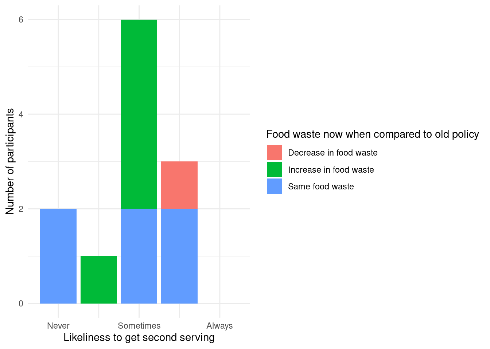

Food waste is a major environmental concern, with the European Union alone producing around 88 million tonnes each year. This study examined the impact of restricting second servings at ETH Zurich’s Polymensa cafeteria through a survey of students who regularly eat there. While some participants reported less waste without second servings, around 40% perceived an increased in waste compared to the previous policy, suggesting portion restrictions may not effectively reduce waste for all students.
Introduction
According to Scherhaufer et al. (2018), close to 88 million tonnes of food waste is produced every year in the European Union alone. This should be a major concern to all, since wasting food also means losing valuable resources and causing environmental impacts as described by Tonini et al. (2018). This also sparks discussions at Swiss universities. Recent modifications to ETH Zürich’s Polymensa food policy have imposed restrictions on second servings. The new policy is criticized by some students, with many voicing their concerns and arguing that the new policy may not effectively reduce food waste as intended by the Mensa. In this study, we investigate the impact of this new policy on the perceived amount of food waste generated by students to answer the question of how the new policy at Polymensa restricting second servings impacts the amount of food waste generated by students, when compared to the previous policy allowing second servings.
Methods
All of the data gathered for this project was obtained through a voluntary online survey, targeted at students who frequent the Polymensa. The survey, and therefore the data collection, was completely anonymous and consisted of 10 questions. In total, 12 subjects participated in this study, which has to be kept in mind when interpreting the obtained data. The further data processing was completely done in R, considering the recommendations for tidy data from Wickham (2014).
Results
In the following, the results will be summarized using some figures and tables. To get a general overview of the participants’ eating habits, the number of times the participants eat at the Polymensa is summarized in the table below.
#Import data for tabletable_data <-read_csv(here::here("data/final/table_data.csv"))#Create Tabletable_data |>gt() |>tab_header(title ="Ammount of times participants eat at Polymensa per week",subtitle ="Data from 12 participants") |>fmt_number(columns = mean, decimals =1)
Table 1: This table gives an overall summary over the participants
Ammount of times participants eat at Polymensa per week
Data from 12 participants
mean
median
min
max
3.2
3
1
6
As shown in Table 1, we see that most participants eat around 3 times per week at Polymensa. This is a relatively high number given that there are many other options on the ETH Zürich campus. Keeping this in mind, we can trust that the participants regularly frequent the Polymensa.
Then, we analyzed the correlation between the amount of perceived food waste today, with the new policy, and the likelihood to pay less for a smaller serving. We would expect some correlation since participants who generate less food waste normally eat more and therefore would not choose a smaller serving. The findings are shown below in Figure 1.
Figure 1: This figure shows the correlation between the likleyness of food waste and the willingness of a participant to choose a smaller serving.
Even though the number of data points is very limited, we can see a slight tendency towards the correlation mentioned above. This means that, in general, participants who reported more food waste would also choose smaller portions. This hints at the willingness of the participants to minimize their food waste, especially since the majority of the participants did not choose price as the most important factor when choosing the menu.
Another interesting thing to look at is the likelihood of taking a second serving when it was possible, and the perceived amount of food waste generated nowadays.
#Import data for plotfig_2_data <-read_csv(here::here("data/final/fig_2_data.csv"))#Plot dataggplot(data = fig_2_data, mapping =aes(x = second_serving,fill = compare_fw)) +geom_bar()+theme_minimal()+labs(x ="Likeliness to get second serving",y ="Number of participants",fill ="Food waste now when compared to old policy" ) +scale_x_continuous(breaks =c(1, 2, 3, 4, 5), labels =c("Never", "", "Sometimes", "", "Always"),minor_breaks =NULL) +coord_cartesian(xlim =c(0.5, 5.5))

Figure 2: This Figure shows the linkeliness to get a second serving in relation to the percieved food waste since the policy change.
When looking at the plotted data of Figure 2, we can see that only participants who were likely to take a second serving have seen a decrease in perceived food waste. These participants probably didn’t have much food waste to begin with, since they normally took second servings. All the other participants have either seen an increase or the same amount of perceived food waste as before the policy change. Even though this trend does not clearly indicate that more food is being wasted overall, we can still see that roughly 40% of participants perceive an increase in food waste since the new policy disallowing second servings was implemented.
Conclusions
In conclusion, the survey yielded interesting data that provides insight into perceived food waste at the Polymensa. The main takeaways of this study are:
The average participant in this study eats close to 3 times a week at Polymensa.
The study participants demonstrated a willingness to reduce food waste by opting for smaller portion sizes at a reduced price when selecting their meals. This inclination was further reinforced by the fact that most participants did not prioritize cost as the primary consideration when making their menu choices.
Roughly 40% of all participants has seen an increase in perceived food waste since the new policy, disallowing second servings, has been implemented.
References
Scherhaufer, S., Moates, G., Hartikainen, H., Waldron, K., & Obersteiner, G. (2018). Environmental impacts of food waste in Europe. Waste Management, 77, 98–113.
Tonini, D., Albizzati, P. F., & Astrup, T. F. (2018). Environmental impacts of food waste: Learnings and challenges from a case study on UK. Waste Management, 76, 744–766.
@online{bartzsch2024,
author = {Bartzsch, Nicolas},
title = {Effect of {Policy} {Changes} in {ETH} {Zürich’s} {Polymensa}
on {Food} {Waste}},
date = {2024-06-06},
url = {https://www.example.com},
langid = {en},
abstract = {Food waste is a major environmental concern, with the
European Union alone producing around 88 million tonnes each year.
This study examined the impact of restricting second servings at ETH
Zurich’s Polymensa cafeteria through a survey of students who
regularly eat there. While some participants reported less waste
without second servings, around 40\% perceived an increased in waste
compared to the previous policy, suggesting portion restrictions may
not effectively reduce waste for all students.}
}
For attribution, please cite this work as:
Bartzsch, N. (2024, June 6). Effect of Policy Changes in ETH
Zürich’s Polymensa on Food Waste. My Blog. https://www.example.com
![]()